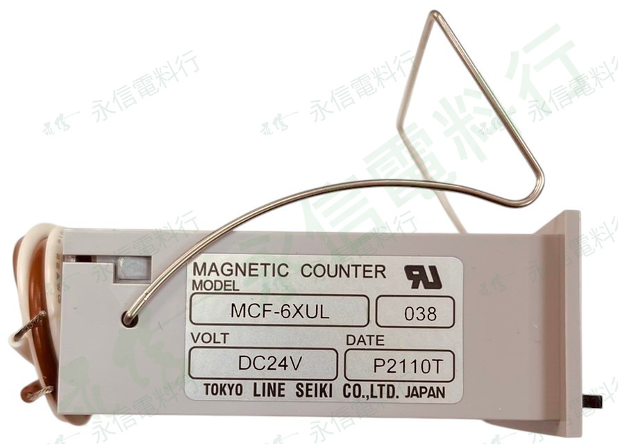

商品照片已套用永信電料行淡綠灰斜向浮水印；點選縮圖可切換照片角度。
 LINE SEIKI
LINE SEIKI六位數電磁式計數器｜MCF 系列
MCF-6XUL DC 24V
MCF-6XUL 六位數電磁式計數器，實拍銘牌可確認工作電壓為 DC 24V。替換時需核對完整型號與 AC／DC 電壓，不能只看外觀。
完整型號MCF-6XUL
顯示位數6 位
工作電壓DC 24V
商品照片3 張
規格核對提醒
同系列外觀可能相近，但完整型號、工作電壓、計數方式、安裝方式與機械結構可能不同。實際規格請依產品銘牌、原廠型錄及現場需求核對。
本網站不顯示即時庫存、價格與交期；實際供應請另行確認。
PRODUCT OVERVIEW
規格核對重點
- 品牌：LINE SEIKI
- 完整型號：MCF-6XUL
- 產品類型：電磁式計數器
- 顯示位數：6 位
- 工作電壓：DC 24V
- 電源形式：DC
NAMEPLATE INFORMATION
商品規格表
品牌LINE SEIKI
完整型號MCF-6XUL
產品分類計數器與長度計數器
系列MCF 系列
產品型式電磁式計數器
顯示位數6 位
工作電壓DC 24V
電源形式DC
商品照片3 張
本頁只整理使用者提供的商品照片、資料夾名稱與可明確辨識的本體銘牌內容；未確認的計數比、尺寸、安裝孔位、認證與其他規格不自行推定。實際規格請依產品銘牌、原廠型錄及現場需求核對。
VERIFIED SPECIFICATION DATA
詳細規格
顯示6 位數機械累計
字高（系列）約 4 mm
復歸手動 Reset
系列電源MCF 系列有 AC100/200V、DC12/24V 等版本；本頁以實物線圈電壓為準
替代比對重點位數、線圈電壓、計數速度／脈波條件、面板尺寸與 Reset 方式
機械式長度計數器的計數比、輪徑與旋轉方向會直接影響量測結果；外觀相近不可直接視為相同規格。 系列共通資料僅用於補充辨識，不取代完整型號之原廠規格書與本件實物銘牌。